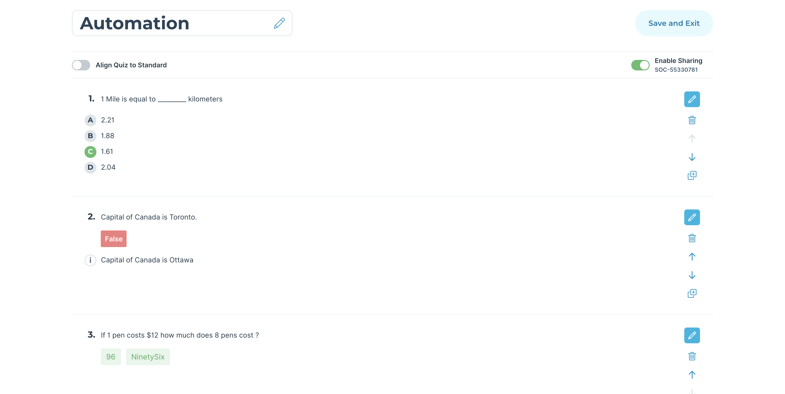

Started
Feb. 17, 2021 05:34:53 p.m.
Ended
Feb. 17, 2021 05:35:29 p.m.
Features Passed
0
Features Failed
1
Features
Scenarios
Steps
Timeline
Tags
| Name | Passed | Failed | Skipped | Others | Passed % |
|---|---|---|---|---|---|
| @Smoke | 0 | 1 | 0 | 0 | 0% |
System/Environment
| Name | Value |
|---|---|
| AppName | AutomationSocrative |
| user | Rajiv |
| build | 1.1 |
| os | Mac |
-
Smoke Test for Socrative Application
17:34:54 p.m. / 00:00:35:049 Fail
Smoke Test for Socrative Application
02.17.2021 17:34:54 02.17.2021 17:35:29 00:00:35:049 · #test-id=1FailSmoke Test for SocrativeGiven Teacher navigates to Socrative Login PageThen Teacher views the default Socrative Login PageAnd Teacher views the "Reset password" and "Create account" LinksWhen Teacher enters Email and Passwordrajiv+qa@showbie.com 92cktaYV@ When Teacher clicks on Sign In ButtonThen Teacher views the Socrative Home PageWhen Teacher clicks on Rooms TabThen Teacher views "Rooms" PageWhen Teacher clicks on Add RoomAnd Teacher enters the Room Name and clicks on AddThen Teacher verifies Room Added Message and Room Name in the pageWhen Teacher clicks on the Room Name and confirms the PopupThen Teacher verifies the control is in the "Launch" PageAnd Teacher verifies Room Name is displayed on the centre of pageWhen Teacher clicks on Quizzes TabThen Teacher views the "Quizzes" PageWhen Teacher clicks on Add Quiz and Create NewThen Teacher views the default name, toggles and question types in the pageWhen Teacher enters the Quiz NameAnd Teacher clicks on Multiple Choice Question TypeThen Teacher views the MC Type with all the default optionsWhen Teacher enters Multiple Choice QuestionAnd Teacher enters the Options/Answers for the questionAnd Teacher chooses right answer for MC QuestionAnd Teacher clicks on Save Question buttonThen Teacher views the Multiple Choice Question is Saved into QuizAnd Teacher views "Add a Question" text with Question TypesWhen Teacher clicks on True/False QuestionThen Teacher views the TF Type with all the default optionsWhen Teachers enters the True/False QuestionAnd Teacher selects the correct optionAnd Teacher enters the Explanation for the TF QuestionAnd Teacher clicks on Save Question buttonThen Teacher views the True/False Question is Added into QuizWhen Teacher clicks on Short Answer QuestionThen Teacher views the SA Type with all the default optionsWhen Teacher enters the Short Answer QuestionAnd Teacher enters the correct answers for SA QuestionAnd Teacher clicks on Save Question buttonThen Teacher views the SA Question is saved into QuizWhen Teacher clicks on Save and Exit Button to Save the QuizThen Teacher views the Quiz is saved in the top of the Quiz List in Quizzes TabWhen Teacher clicks on Launch TabThen Teacher verifies the control is in the "Launch" PageWhen Teacher clicks on QuizAnd Teacher selects the Quiz from the list and click on NextAnd Teacher enters the Delivery Method as "Instant Feedback" and SettingsAnd Teacher click on Start Button to Launch a quizThen Teacher verifies the control is in the "Results" PageAnd Teacher verifies the activity is "Active" from Results PageAnd Teacher views the QuizName, Show Names, Responses and Results Toggle in the pageWhen Teacher clicks on Finish Button on results PageThen Teacher views the "Finish Activity?" Popup on the pageWhen Teacher clicks on "Finish" Button in the PopupThen Teacher verifies the activity is "InActive" from Results PageAnd Teacher views the Toggles, Share and Export ButtonAnd Teacher verifies the date and time of the Report in the pageWhen Teacher clicks on the 1st question from Results GridStep skippedThen Teacher views the question with buttons for respective question typesStep skippedWhen Teacher navigates between questionsStep skippedAnd Teacher clicks on "Back To Results Table" button on Reports PageStep skippedThen Teacher verifies the control is in the "Reports" PageStep skippedWhen Teacher clicks on Results TabStep skippedAnd Teacher clicks on Launch Activity ButtonStep skippedThen Teacher verifies the control is in the "Launch" PageStep skippedWhen Teacher clicks on Short Answer from Quick Question SectionStep skippedThen Teacher verifies SA View with default optionsStep skippedWhen Teacher enters the question under Optional Question SectionStep skippedAnd Teacher selects the toggles for Unlimited Responses and Student NamesStep skippedAnd Teacher click on Start Button to Launch a quizStep skippedThen Teacher verifies the control is in the "Results" PageStep skippedAnd Teacher views the "Quick Question" text with current date and timeStep skippedAnd Teacher views the Start Vote, Show Answers, Show Names ButtonsStep skippedAnd Teacher verifies the activity is "Active" from Results PageStep skippedWhen Teacher clicks on Finish Button on results PageStep skippedThen Teacher views the "Finish Activity?" Popup on the pageStep skippedWhen Teacher clicks on "Finish" Button in the PopupStep skippedThen Teacher verifies the activity is "InActive" from Results PageStep skippedWhen Teacher clicks on Launch TabStep skippedThen Teacher verifies the control is in the "Launch" PageStep skippedWhen Teacher clicks on Space RaceStep skippedAnd Teacher selects the Quiz from the list and click on NextStep skippedAnd Teacher choose the Space Race Settings and TogglesStep skippedAnd Teacher click on Start Button to Launch a quizStep skippedThen Teacher verifies the control is in the "Results" PageStep skippedAnd Teacher verifies Space Race is launched with all the functionalitiesStep skippedAnd Teacher verifies the activity is "Active" from Results PageStep skippedWhen Teacher clicks on Finish Button on results PageStep skippedAnd Teacher clicks on OK to Confirm the PopupStep skippedThen Teacher verifies the control is in the "Reports" PageStep skippedAnd Teacher verifies the activity is "InActive" from Results PageStep skippedAnd Teacher views the Toggles, Share and Export ButtonStep skippedWhen Teacher clicks on Header username on top right cornerStep skippedAnd Teacher clicks on Sign Out ButtonStep skippedThen Teacher verifies the "Please Confirm" popup to Signout of applicationStep skippedWhen Teacher clicks on Yes in the PopupStep skippedThen Teacher views the default Socrative Login PageStep skippedstepDefinitions.SocrativeHooks.tearDown(io.cucumber.java.Scenario)Smoke_Test_for_Socrative
-
@Smoke
1 tests
@Smoke
1 failedStatus Timestamp TestName Fail 17:34:54 p.m. Smoke Test for Socrative Smoke Test for Socrative Application.Smoke Test for Socrative
-
java.lang.IllegalArgumentException
1 tests
java.lang.IllegalArgumentException
1 failedStatus Timestamp TestName Fail 17:35:28 p.m. And Teacher verifies the date and time of the Report in the page Smoke Test for Socrative Application.Smoke Test for Socrative.And Teacher verifies the date and time of the Report in the page